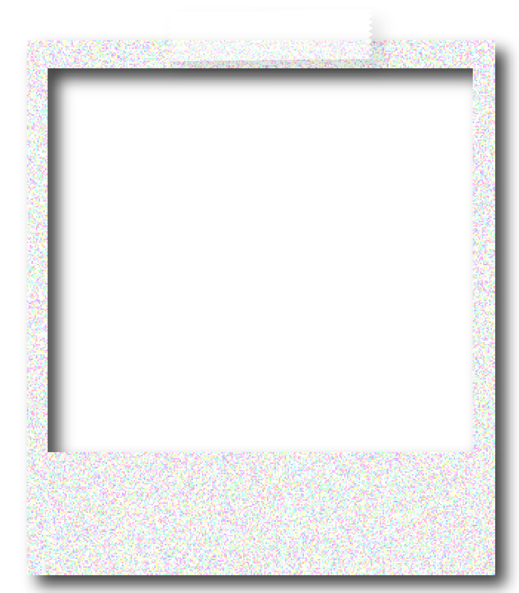
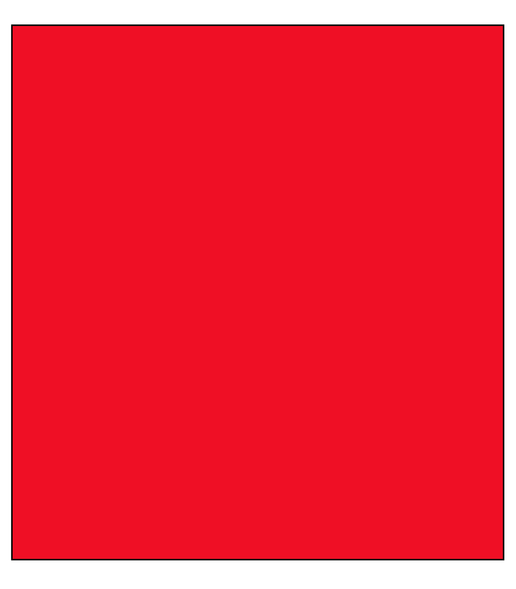

PHOTOS BY CAPRICE CORDLE
My work is authentically human because I like to encapsulate emotion in my work. The feelings in me are represented by the mood and movement of my photographs. Take the girl running for example, she is a representation of the freedom and innocent joy that only children possess. When looking at the photo it takes me back to a time when all I had to worry about was playing with toys and running around. I try to create this same effect with each of my photographs, so that the observer does not just see my work, but they feel it too.

Billie Mauldin
There is a certain individuality to this, I think. Clothes are innately social, and one of our earliest inventions. Even before agriculture, much before computers. This is the culmination of how I express myself to the world.
As two trans women, how we choose to dress grants us a certain agency. There is power in that. Hormone replacement therapy is an incredible thing, but before any of that, I felt real for the first time in one of my mom's dresses. This is a power AI cannot grant me, or anyone.
AI could easily generate something like this image. "A woman in a black dress, with red lipstick on, laying atop a pile of colorful clothes against a white background." It'd probably get pretty close, but the patterns would fall apart, the boundaries between garments would be blurry, and there would be no cohesive style. It would replace the love that motivated this image with cold and indifferent pixels.
 CINEMATOGRAPHY
CINEMATOGRAPHY
YAN ORELLANA
The story behind it is something AI can't ever replace due to not being able to live. Every piece of my art is basically a self portrait of what I am feeling at the moment, and to be able to achieve that type of inflection, one must be alive.